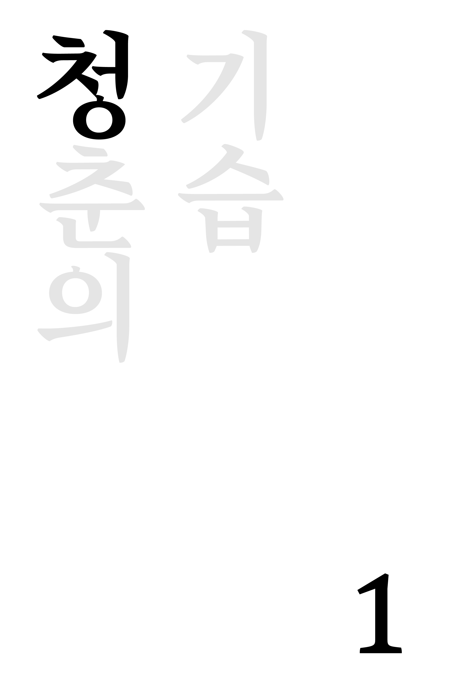
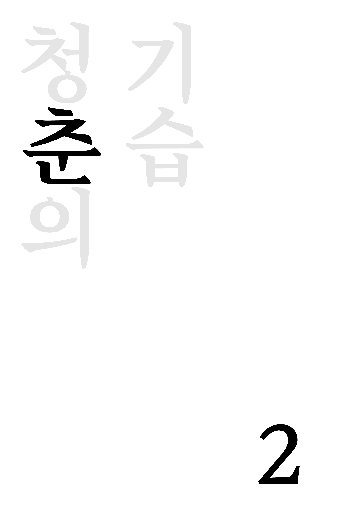
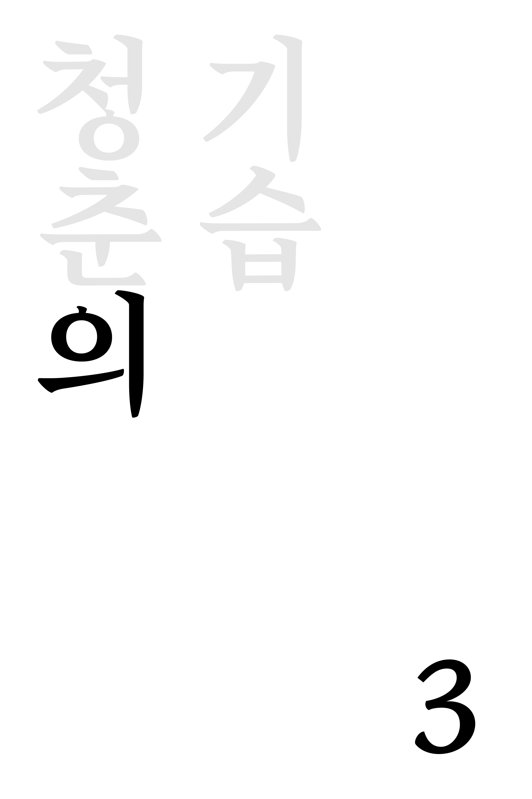
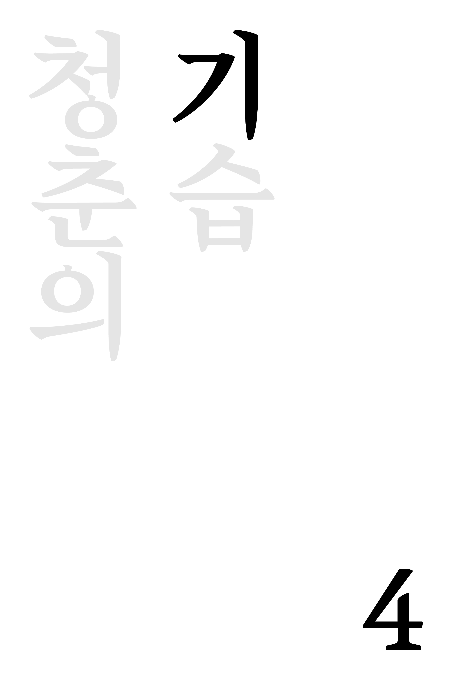

청춘의 기습은 시인 이병률의 2017년 출간된 다섯 번째 시집 바다는 잘 있습니다에 수록된 작품입니다. 이병률은 1995년 등단 이후 사람,사랑,고독,여행과 같은 일상의 감정을 섬세하게 포착해온 시인이며, 이 시집에서는 혼자 자신을 들여다보는 동시에 타인과의 관계 속에서 '사람의 자리'를 묻습니다.
이 시 역시 이러한 시집의 흐름 안에서 청춘을 단순히 젊음의 시기가 아닌, 스스로에게 질문을 던지고 앞으로 나아가려는 순간으로 바라봅니다. 제목의 '기습'은 이러한 청춘이 예고 없이 마음속으로 들이닥치는 순간을 연상시키며, 이병률 특유의 담담하면서도 감각적인 언어를 통해 성장에 대한 질문, 망설임, 삶을 계속 나아가게 하는 마음으로 읽을 수 있습니다.